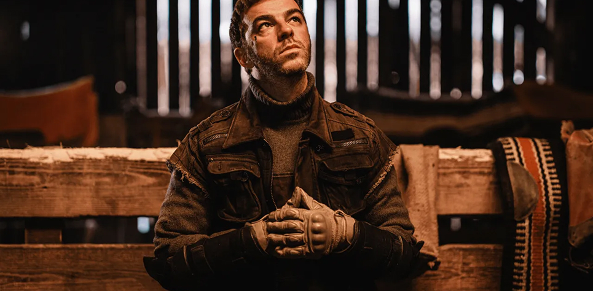

.png)
Salmo: «Ho scoperto di essere una brava persona»
il tuo album esce nella settimana del conclave, dell’elezione del nuovo Papa. In fondo c'è molto di religioso nella tua musica, tanti simboli.
«Io credo nei segni, quindi non può essere una casualità. È l’evoluzione dell'ultima frontiera del marketing, essere in grado di leggere l'attualità, quello che succede. E poi la mia cifra stilistica si avvicina sempre molto alla religiosità, mi chiamo Salmo…».
Però dici di non credere in Dio. E allora in cosa credi?
«Credere in qualcosa ci sta, assolutamente. Il punto è che gli esseri umani cercano sempre di attribuire la responsabilità di ciò che accade ad altre persone, che sia un dio o la religione stessa. Ci sono, secondo me, due distrazioni di massa importanti nella storia, una è la Bibbia, e l'altra è Internet. È come se queste due cose volessero distogliere le persone dal potere che hanno gli esseri umani».
Quindi dovremmo credere nelle persone?
«Sarebbe più facile. Ci concentriamo a credere in quello che vediamo fuori, quando in realtà la risposta è dentro di noi. Come esseri umani siamo capaci di fare cose incredibili, sono che non lo sappiamo».
Ranch è ispirato al personaggio di Snake di Gangs of Milano. Potrebbe essere anche uno sviluppo narrativo per il sequel della serie?
«Sì, perché no. C'è un collegamento molto naturale tra questo personaggio immaginario di Ranch e Snake, potrebbe addirittura essere lui. Pensa a una serie tv tratta da questa storia: siamo nel 2070, c'è una persona che vive da solo al mondo, ci sono i robot morti, poi alla fine si scopre che anche lui è un robot. Ma la chiave potrebbe essere anche nella rappresentazione della creazione».
Questo proiettarsi in avanti sembra quasi un ritorno al passato: ci sei tu, la natura, l'isolamento...
«Per me il significato è che se ci dovesse essere una guerra tra esseri umani e robot, molte parti del mondo potrebbero rimanere intatte. Quindi si potrebbe interpretare che ciò che sopravvive a qualunque cosa è la natura».

Nel tuo passato racconti di aver sofferto di timidezza.
«Ogni tanto mi succede ancora. Non come quando ero ragazzino, ero tremendo, con i denti storti, non riuscivo a parlare con gli altri, mi sentivo un disagiato. Ci ho combattuto e a volte mi risulta molto strano perché sul palco posso “comandare” 50 o 100mila persone a fare quello che dico io. Poi scendo e mi perdo in mezzo a due, ché non riesco ancora a dialogare. È una lotta continua».
Come la gestisci?
«Faccio finta di mettere una maschera. Mi focalizzo per recitare una parte. La recitazione salva la vita delle persone, è necessaria».
Che musica faresti oggi se avessi 16 anni?
«Il metal. Nessuno lo ascolta, se accendi qualcosa di metal le reazioni sono “oddio, cos’è”. Quindi mi applicherei e proverei a farlo bene».
Dici che i tuoi 40 anni sono il giro di boa.
«Ho passato tutta la vita a cercare di essere o a pensare di essere un duro, magari agli occhi degli altri anche cattivo. E in realtà a 40 anni mi sono reso conto di essere una brava persona, è un po' coraggioso da ammettere ma sono veramente fiero di essere un bravo ragazzo».
Arriva a un certo punto anche una voglia di famiglia?
«Ci penso un sacco di volte. Vorrei avere un figlio, certo. Potrebbe essere il momento giusto, avrei la possibilità economica, la tranquillità. Magari un giorno arriverà».
Cosa ti piacerebbe insegnargli?
«Non lo obbligherei a fare nulla, tanto meno la musica. Credo che il fatto di essere un figlio d'arte possa diventare una condanna. Io direi a mio figlio: “fai quello che vuoi, però sappi che potresti andare incontro a questa cosa. E potrebbe rovinarti la vita o farti sentire triste perché probabilmente dovresti eguagliare tuo padre”».
Un’alternativa alla musica?
«Mi piacerebbe giocasse a pallone, ma forse è ancora più difficile. Anch'io ho provato col calcio, e poi sono finito a fare musica».
Vai alla biografia dell’artista

Salmo